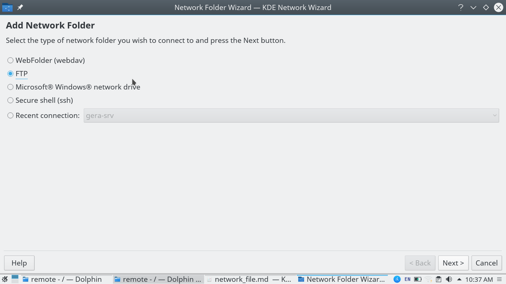

Sparvk enabled filesystem allows you to connect to your remote servers. WIth this functionality you can perform operations on network files and directories easily.
Here's how you can connect to a network file system.

-
Navigate to the computer tab and choose the network option from your startup menu. Or click on the network option from the filesystem on your computer.
-
You should be taken to a network selection screen. On this screen you should see various ways of connecting to network including bluetooth, MTP, Samba shares. For now we'll create our own new network device.
-
Click on the "Add Network Folder" option to bring up the network folder wizard. As you can see you can create many different types of network folders. Including webdav, FTP, ssh and even Mircosoft network drive. These are different protocols for accessing your files over a remote connection. For the purpose of this tutorial we'll select an FTP connection.
- After choosing FTP click next. You'll need to fill in the details of your new network connection. Here's a rundown of what you need to do
- Provide a name for your directory
- Provide the name of the user who is going to be using this directory
- Provide the IP address of the remote directory (get in touch with your administrator to find out the address)
- The directory on the remote folder you want to access locally (please note your access to the directories might be limited by your administrator)

Once you're finished click OK. You should now be able to see your network folder on the network file system. You can work with this directory in the same way that you work with any directory on sparvk. Any files that you create on this directory will also be created on the remote server. Any files that you remove from this directory will also be removed from the remote server. You can create subdirectories. All the operations that you perform on this folder will be mirrored on the remote folder.
Sparvk provides access to network files from within the desktop workspace, so you don't have to install any additional software components to get this feature to work. With this functionality you can backup all your files and directories remotely from your workstation. Sparvk helps you keep all you data safe and easily recoverable.